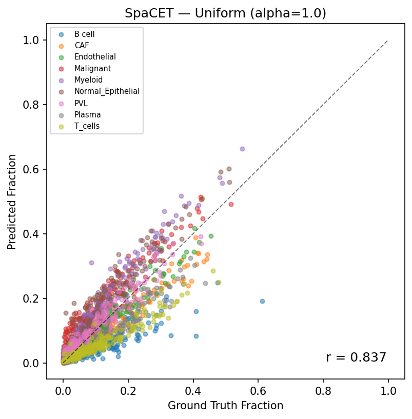
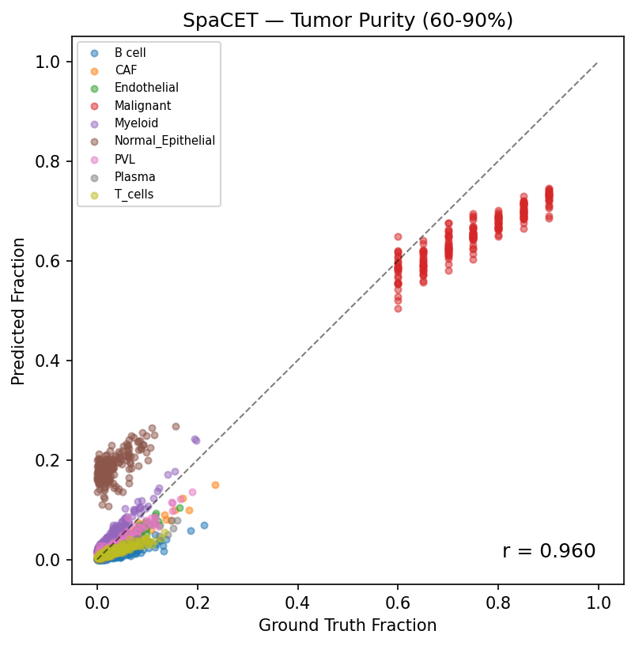
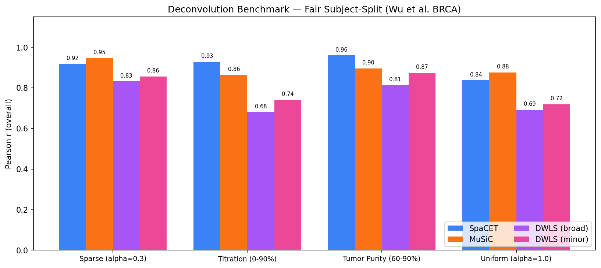
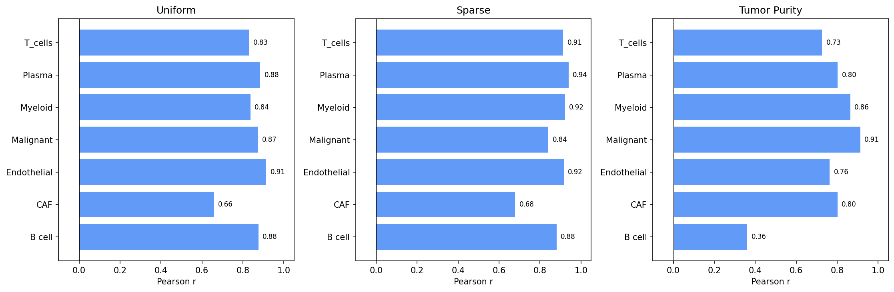

Bulk Deconvolution Benchmark
Tutorial 8 — Real BRCA pseudobulk evaluation with SpaCET vs MuSiC vs DWLS
Overview
This benchmark evaluates SpaCET's bulk deconvolution against MuSiC and DWLS (Tsoucas et al. 2019, Nat Commun) using real breast cancer single-cell RNA-seq data from Wu et al. 2021 (Nature Genetics, GSE176078). The dataset comprises 100,064 cells from 26 subjects across 9 cell types, providing a realistic foundation for evaluation. DWLS is included because SpaCET's bulk path borrows its dampened-weighting scheme; the comparison makes that lineage explicit.
A fair subject-level train/test split is used: 13 subjects form the reference panel and 13 held-out subjects are used exclusively for pseudobulk generation. Neither method sees the test-set cells during reference construction, ensuring a proper held-out evaluation without data leakage.
- SpaCET uses
deconvolution_matched_scrnaseq()with the train-set reference. - MuSiC uses the same train-set scRNA-seq as its reference, ensuring a level playing field.
- DWLS builds a cell-type signature matrix via MAST one-vs-rest DE on the same train-set, then solves dampened weighted least squares per bulk sample.
- Four evaluation scenarios with diverse mixing ratios test complementary aspects of deconvolution accuracy.
1. Data and Split
The Wu et al. 2021 BRCA dataset (GSE176078) provides real single-cell RNA-seq from 26 subjects profiled across 9 major cell types. The subject-level 50/50 split ensures no cell from the test subjects can influence the reference profiles used by either method.
Cell type composition (full dataset)
| Cell Type | Cell Count |
|---|---|
| T-cells | 35,214 |
| Cancer Epithelial | 24,489 |
| Myeloid | 9,675 |
| Endothelial | 7,605 |
| CAFs | 6,573 |
| PVL | 5,423 |
| Normal Epithelial | 4,355 |
| Plasmablasts | 3,524 |
| B-cells | 3,206 |
| Total | 100,064 |
2. Pseudobulk Generation
Pseudobulk samples are constructed exclusively from the 13 held-out TEST subjects (2,000 cells per sample). Four scenarios probe different aspects of deconvolution difficulty:
| Scenario | Design | Samples |
|---|---|---|
| Uniform Dirichlet | alpha=1.0 — all cell types equally likely | 200 |
| Sparse Dirichlet | alpha=0.3 — sparse mixtures dominated by 1–2 types | 200 |
| Realistic Tumor Purity | 60–90% Cancer Epithelial, remaining types from Dirichlet | 200 |
| Malignant Titration | Cancer Epithelial fraction swept 0–90% in fixed steps | 100 |
The Uniform and Sparse scenarios test general deconvolution accuracy across the full composition space. The Tumor Purity and Titration scenarios are clinically motivated: most solid tumor biopsies are dominated by malignant cells, making accurate recovery of the immune and stromal minority the critical clinical challenge.
3. Results
Overall Pearson r between predicted and ground-truth fractions (all samples, all cell types pooled) is reported for each scenario. The Winner column identifies the method with higher r.
| Scenario | SpaCET r | MuSiC r | DWLS (broad) r | DWLS (minor) r | Winner |
|---|---|---|---|---|---|
| Uniform (alpha=1.0) | 0.84 | 0.88 | 0.69 | 0.72 | MuSiC |
| Sparse (alpha=0.3) | 0.92 | 0.95 | 0.83 | 0.86 | MuSiC |
| Tumor Purity (60–90%) | 0.96 | 0.90 | 0.81 | 0.87 | SpaCET |
| Titration (0–90%) | 0.93 | 0.86 | 0.68 | 0.74 | SpaCET |
4. Benchmark Figures
The following figures summarize deconvolution accuracy across all four scenarios. Scatter plots compare predicted versus ground-truth fractions at the per-sample, per-cell-type level. The comparison panel and per-type bar chart identify where each method gains or loses accuracy.

Predicted vs ground truth (Uniform Dirichlet, r=0.84). Each point represents one cell type in one pseudobulk sample. The dashed line indicates perfect prediction.

Predicted vs ground truth (Tumor Purity 60–90%, r=0.96). SpaCET maintains strong accuracy even as Cancer Epithelial dominates the mixture, correctly apportioning the residual immune and stromal fractions.

Four-method comparison across all scenarios (Pearson r, overall). SpaCET leads on the two tumor-dominated scenarios; MuSiC leads on the two Dirichlet scenarios. DWLS (broad, 9 major types) trails across all four. DWLS (minor, 22 subtypes collapsed to 9 majors at evaluation) closes most of the gap on the tumor-dominated scenarios and narrows it modestly on uniform/sparse, but still trails SpaCET and MuSiC.

Per-cell-type accuracy. Pearson r is shown for each of the 9 cell types, averaged across the four scenarios. T-cells and Myeloid cells are recovered most reliably; Cancer Epithelial accuracy is scenario-dependent.
5. Reproducing
The full benchmark pipeline runs in four steps. All heavy compute should be submitted via SLURM — do not run GPU or R jobs on the login node.
# Step 1: Download Wu et al. data sbatch scripts/slurm_download_brca_scrna.sh # Step 2: Run SpaCET benchmark (GPU) sbatch scripts/slurm_tutorial_t8_real_brca.sh # Step 3: Run MuSiC benchmark (R) sbatch scripts/slurm_music_benchmark.sh # Step 4: Run DWLS benchmark (R, slow: ~2.5 h for MAST signature + per-sample WLS) sbatch scripts/slurm_dwls_benchmark.sh # Step 5: Regenerate comparison figure + summary table python scripts/regenerate_dwls_figure.py
Step 1 downloads GSE176078 from GEO and formats it as an AnnData object. Step 2 runs the subject-level split, pseudobulk generation, and SpaCET deconvolution on GPU. Step 3 runs MuSiC in R using the identical train-set reference and pseudobulk inputs written by Step 2. Step 4 builds a DWLS MAST signature matrix from the same train-set and solves dampened weighted least squares per bulk sample. Step 5 combines the three external methods with SpaCET into the comparison table and bar chart shown above.